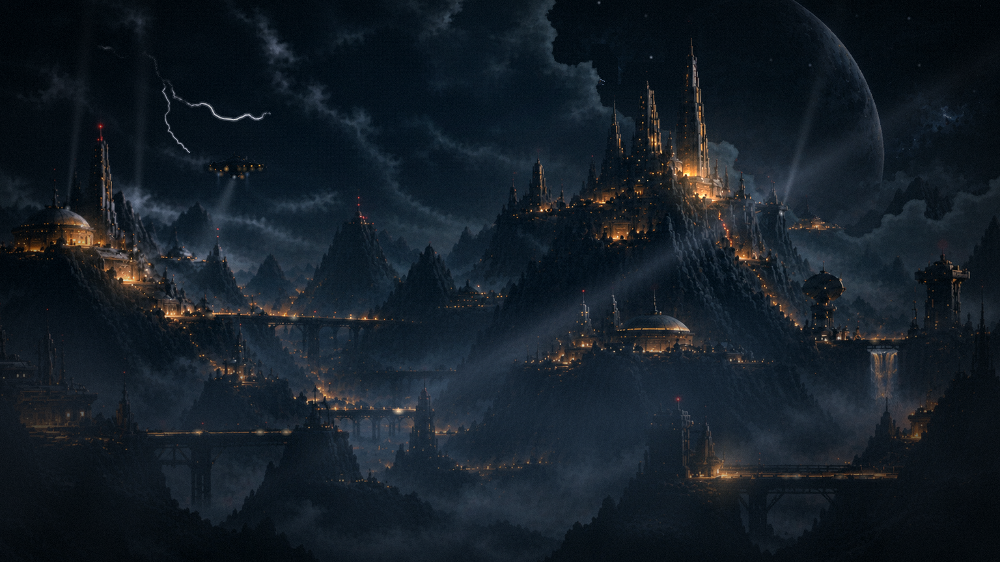
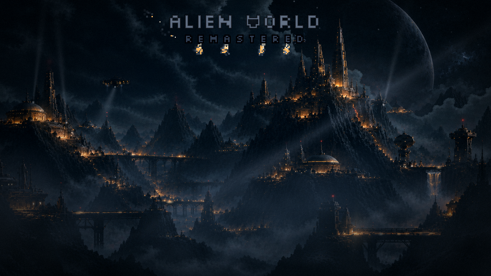
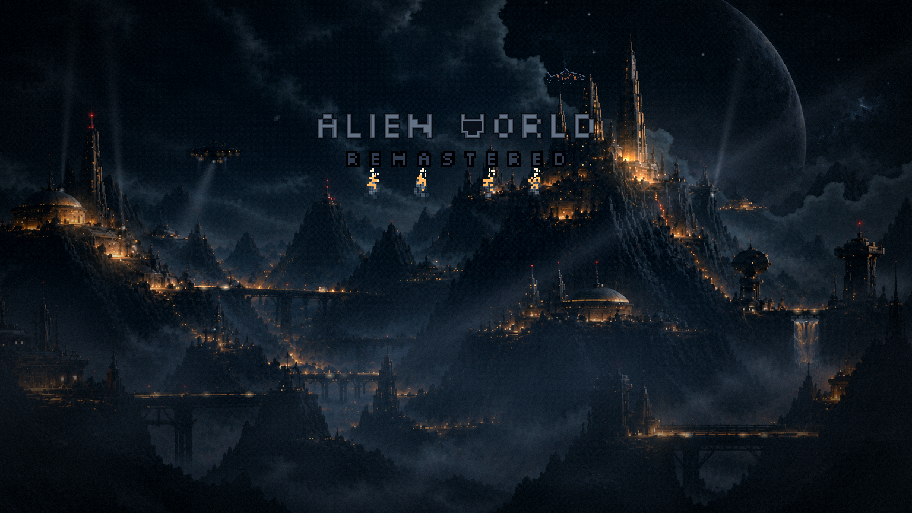
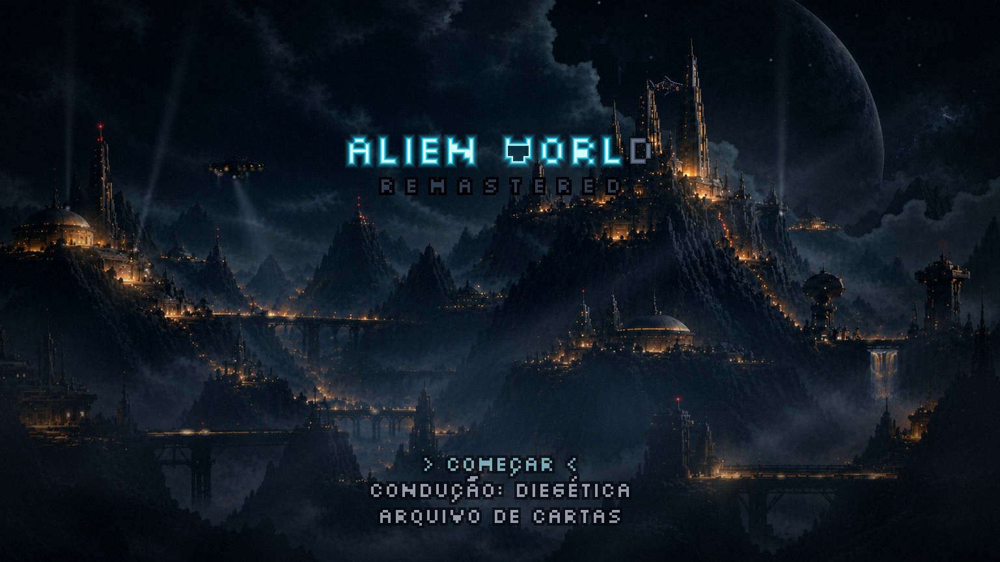
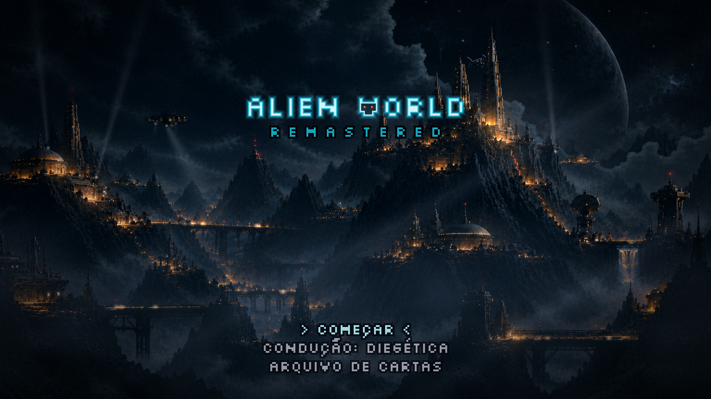
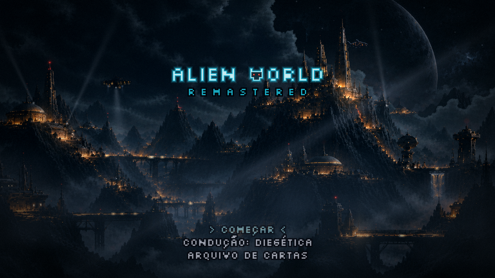

Menu refeito · no jogo
20/10/2026. ← rodada 9 · É o menu do jogo, não a maquete: o cenário mora numa cena da camada HD, atrás do texto; tudo o que você aprovou nas nove rodadas está nos números de src/menu/numerosMenu.ts. A técnica inteira ficou em docs/CENARIO-VIVO.md.
O menu
Os instantes






O que mudou para você no jogo
Durante a abertura, qualquer tecla (o Enter também) só pula para o menu pousado. O 1, o 2 e o 3 continuam começando direto.
A condução fica numa linha da lista (↑↓ até ela, ←→ trocam) e o jogo lembra a escolha na próxima vez.
Do ARQUIVO DE CARTAS, o ESC volta com o cursor no ARQUIVO e o menu já pousado.